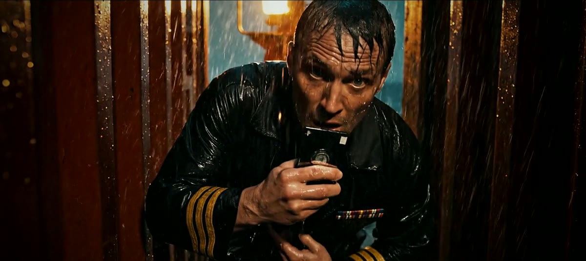

Supercargo · Age 34
Ren Castillo
Supercargo: the officer aboard who answers for the cargo on the owner's behalf.
Half-Filipino, half-Japanese, raised in the lanes of Victoria Reach. His mother sold fish in a wet market, and his father was a Japanese deckhand who left one season and never came back. He speaks four languages and isn't fully at home in any of them. He wears a worn Meridian officer's jacket over dark streetwear and still carries a steel manifest clipboard.
Before he signs anything, he clicks his pen three times.